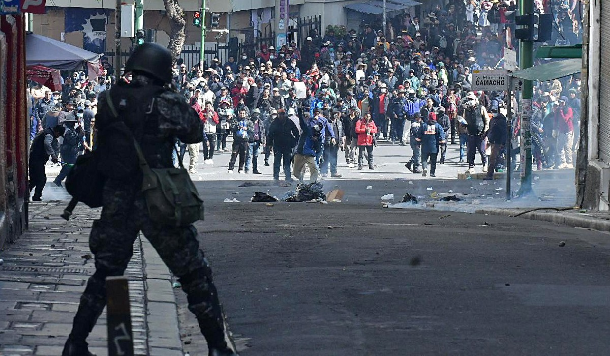

MÓDULO_A
Abastecimiento de Carburantes
Monitoreo de reservas críticas de combustible y cálculo de días de autonomía.
Cargar ParámetrosANÁLISIS MATEMÁTICO DE LA CRISIS EN LA PAZ - BOLIVIA
Actualmente, la ciudad de La Paz y el territorio nacional atraviesan fluctuaciones severas en la cadena de suministros. Los problemas logísticos, la especulación en los mercados y los bloqueos han generado variaciones críticas en los precios de la canasta familiar y escasez de carburantes.
El objetivo principal de este simulador interactivo es permitir a los ciudadanos representar, calcular y visualizar el impacto real de estos problemas mediante modelos matemáticos sencillos. Buscamos facilitar la comprensión de la crisis y apoyar la toma de decisiones familiares o comunitarias sin tomar una posición política.

Situacion Actual
Monitoreo de reservas críticas de combustible y cálculo de días de autonomía.
Cargar ParámetrosCálculo del impacto inflacionario y devaluación del presupuesto en la canasta básica.
Cargar ParámetrosCuantificación de pérdidas económicas por bloqueos y desvíos viales.
Cargar ParámetrosSimulador de solvencia comercial para contrastar ingresos fijos contra listas de gastos.
Cargar ParámetrosProyección del colapso de inventarios debido a compras por pánico colectivo.
Cargar ParámetrosMedición del porcentaje de pérdida neta del salario frente a la carga de gastos variables.
Cargar ParámetrosLA INFORMACIÓN ES LA MEJOR DEFENSA CONTRA LA INCERTIDUMBRE.
Las crisis temporales se superan con consumo racional y solidaridad comunitaria. Evite las compras por pánico, ya que la sobredemanda artificial es lo que realmente quiebra el abastecimiento. Utilice estos módulos para planificar su presupuesto, ajuste sus prioridades y actúe en base a datos reales, no a rumores.
Juntos y con inteligencia financiera, mitigaremos el impacto.